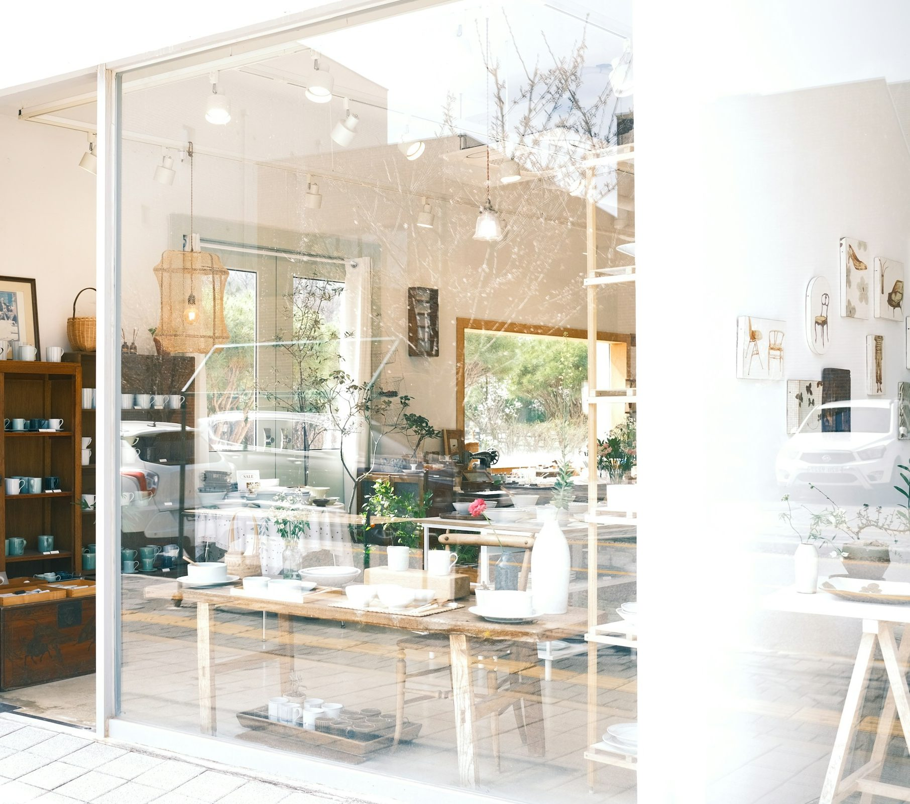
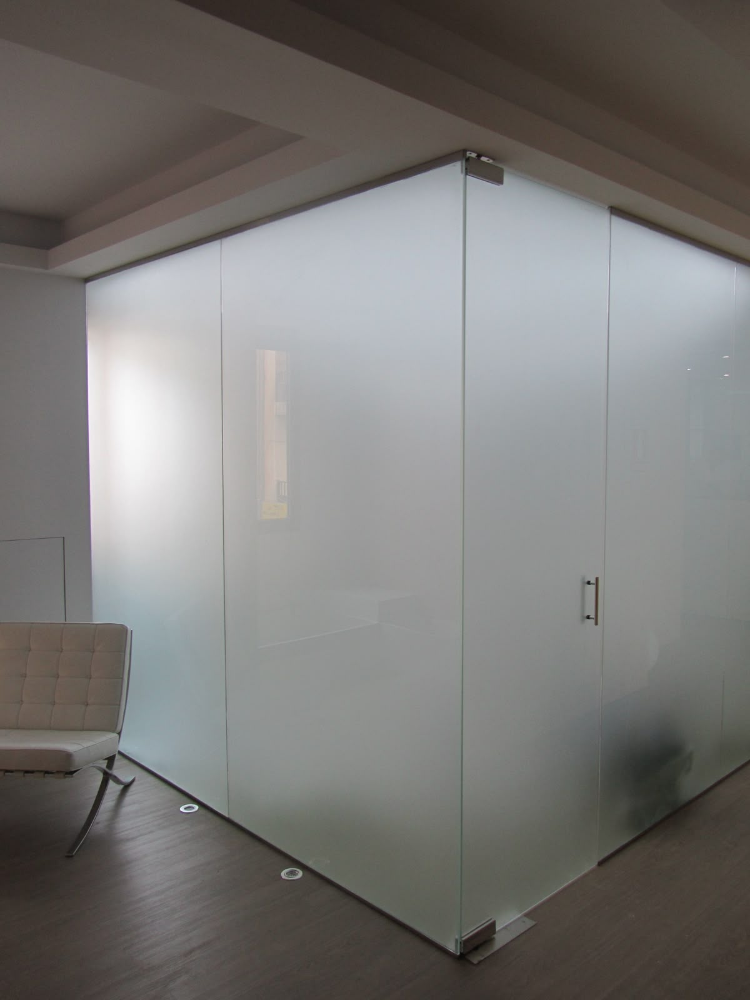
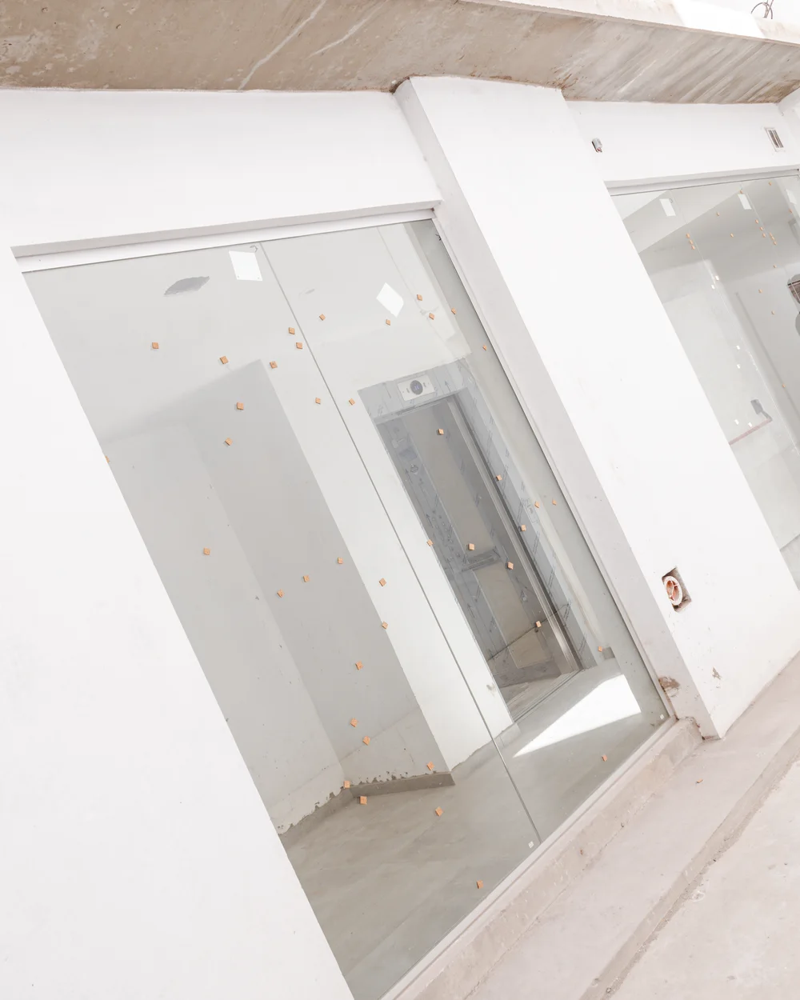

Frentes comerciales
Vidrieras y accesos de locales.

Frentes y puertas de vidrio templado, y piel de vidrio para fachadas.
En puertas, frentes y fachadas.
Frentes que muestran el interior desde la vereda.
Puertas y frentes sin marcos.
Medición en obra y colocación a cargo nuestro.

Vidrieras y accesos de locales.
Templado, limpias y resistentes.
Para frentes y fachadas completas.

Separan con vidrio templado.

Vidrio templado a medida.
Sin marco, solo vidrio y herraje.

Sí, aunque en Argentina se usa como sinónimo de vidrio templado.
No: el vidrio se corta y perfora antes del templado. Por eso medimos en obra con precisión.
Sí, para frentes y fachadas completas. Medimos en obra y cotizamos a medida.
Depende del proyecto. Te damos un plazo concreto al confirmar la medición.
Frentes, puertas y piel de vidrio a medida. Medimos, fabricamos y colocamos.